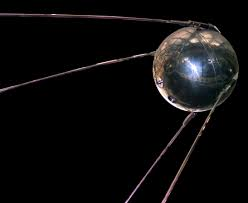
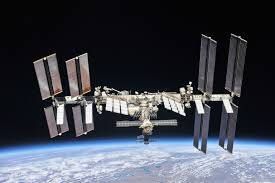
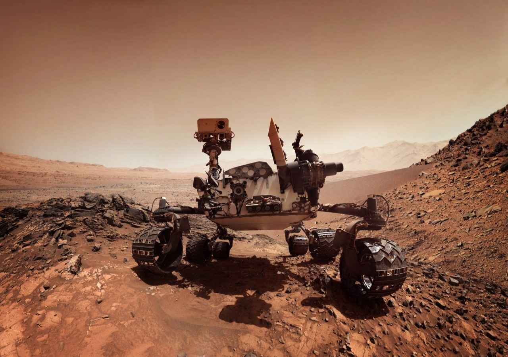
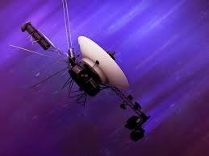

EXPLORAÇÃO ESPACIAL
LINHA DO TEMPO
1957
Lançamento do Sputnik, o primeiro satélite artificial.

1969
Apollo 11 leva o homem à Lua pela primeira vez.

1998
Início da construção da Estação Espacial Internacional (ISS).

2021+
Missões modernas exploram Marte e além com robôs avançados.

MISSÕES IMPORTANTES

Apollo 11
Primeira missão a levar humanos à Lua.
Perseverance
Rover que explora Marte em busca de sinais de vida.

James Webb
Telescópio que observa o universo profundo.

Voyager 1
Objeto humano mais distante da Terra.